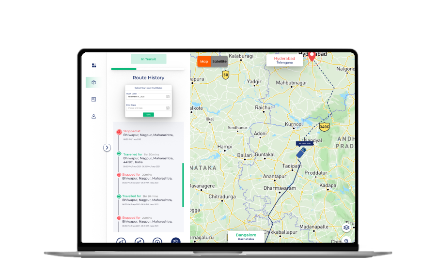
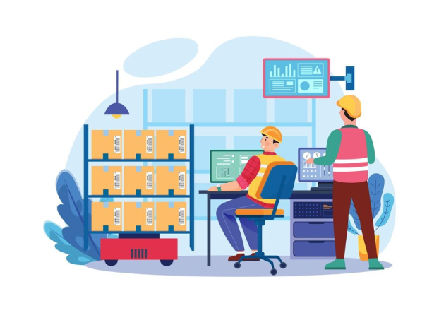
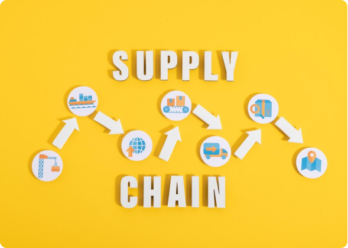

Big Data and Predictive Analytics in Logistics: A Game Changer for Achieving End-to-End Supply Chain Visibility
INTRODUCTION
In the ever-evolving landscape of logistics, achieving end-to-end supply chain visibility has become a top priority. The convergence of Big Data and predictive analytics is transforming the way logistics companies operate, providing actionable insights and enabling proactive decision-making. In this blog, we explore how these technologies are reshaping the logistics sector and propelling businesses toward achieving seamless supply chain visibility
CONTENT
The marriage of Big Data and predictive analytics is revolutionizing the logistics industry by providing unprecedented visibility and insights. With end-to-end supply chain transparency, logistics companies can make informed decisions, optimize operations, and enhance customer experiences. This game-changing duo transforms reactive approaches into proactive strategies, resulting in streamlined processes, reduced costs, and improved efficiency
HARNESSING THE POWER OF BIG DATA
The logistics industry generates an enormous amount of data across various touchpoints. From IoT-enabled tracking devices to warehouse management systems, this data holds valuable information about shipment status, inventory levels, route efficiencies, and more. Big Data technologies, including cloud computing and data lakes, enable logistics companies to collect, store, and process this data efficiently. Similarly Liveasy allows for a comprehensive view of the supply chain, identifying trends and patterns that can drive strategic decisions.
Predictive Analytics: A Glimpse into the Future
Predictive analytics goes beyond historical analysis by forecasting future outcomes based on existing data. With advanced algorithms and machine learning models, Liveasy can help logistics companies anticipate demand fluctuations, identify potential disruptions, and optimize resource allocation. For instance, predictive analytics can foresee weather-related delays, enabling companies to reroute shipments proactively. This proactive approach minimizes risks, reduces downtime, and enhances customer satisfaction by ensuring timely deliveries.
Route Optimization and Real-Time Tracking
Liveasy with its predictive analytics empowers logistics professionals to optimize routes in real time. By considering factors such as traffic conditions, weather forecasts, and historical data, the optimal path can be determined to ensure efficient and timely deliveries. Real-time tracking devices embedded in shipments enable accurate ETA predictions, offering customers transparency and reducing the chances of missed delivery windows. This level of visibility fosters customer trust and loyalty, differentiating logistics companies in a competitive market.

Inventory Management and Demand Forecasting

Maintaining the right inventory levels while minimizing carrying costs is a delicate balance. Liveasy aids in demand forecasting by analyzing historical sales data, market trends, and external factors. Logistics companies can adjust inventory levels based on anticipated demand, reducing stockouts and excess inventory. This precision optimizes storage space, improves cash flow, and reduces the risk of overstocking or shortages.
Mitigating Supply Chain Risks
Supply chains are susceptible to various risks, from natural disasters to geopolitical uncertainties. Big Data and predictive analytics enable proactive risk management. By continuously monitoring external data sources and internal metrics, Liveasy can identify potential disruptions early. This foresight empowers companies to implement contingency plans, reroute shipments, and allocate resources strategically, minimizing the impact of unforeseen events on the supply chain.

CONCLUSION
In the intricate web of the steel industry, the challenge of elevated freight costs looms large. The formidable weight of steel products, specialized handling requirements, and the intricate supply chain dynamics all play their part in contributing to these higher expenses. While freight costs remain a significant concern, the industry's ongoing exploration of innovative logistics solutions and advancements in transportation technologies offer a glimmer of hope for more efficient and cost-effective steel transportation in the future. As the steel industry continues to evolve, it is the pursuit of solutions to these challenges that will ultimately determine the trajectory of freight costs in this vital sector of the global economy.